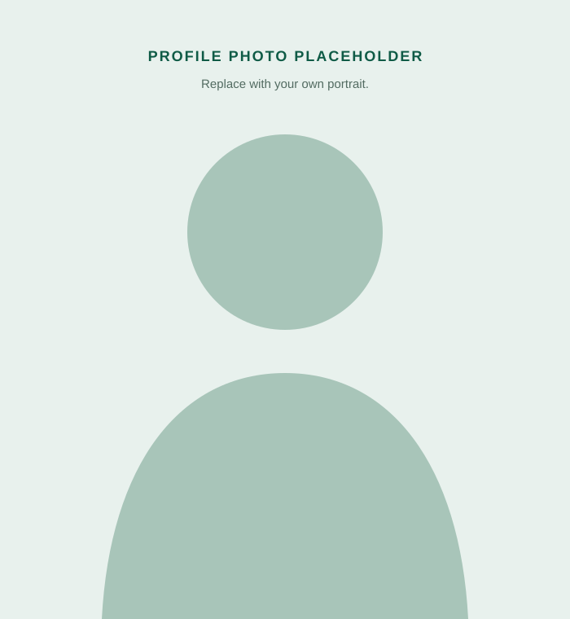

Meng Gao
Principal Investigator · IAPME
Add Professor Gao’s academic biography here, including current appointment, education, previous positions, research interests, awards, and professional service.
Replace portrait and biography before publishing